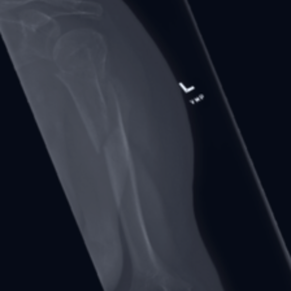
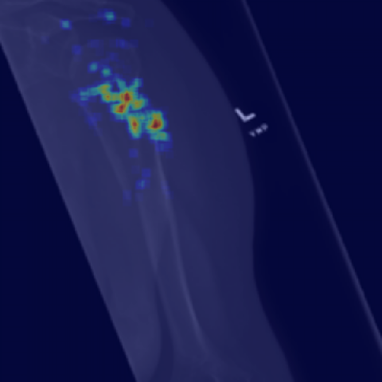

Radiologists see 50 to 100 scans in a day and typically spend a few minutes per X-Ray. X-Ray Vision is here to assit radiologist's workflow by providing results in under 20 seconds. Upload an X-Ray and you will be taken to a new page where the probability that an image contains an abnormality will be provided along with the highlighted region of abnormalitiy.
 99.8% chance of abnormality
Disclaimer: This app is only meant for demonstration and researh purposes and is not meant to be used in any real medical diagnosis.
I am currently an Insight AI Fellow in NYC building AI tools to assist physician's workflows.
I previously completed a Masters of Science in computer science at Brown University. At Brown I worked on various research projects in computer vision. Projects include applying deep learning models to detect tumor cells in gigapixel patholgy slides and implementing deep learning models for 2D and 3D reconstruction of neurons.